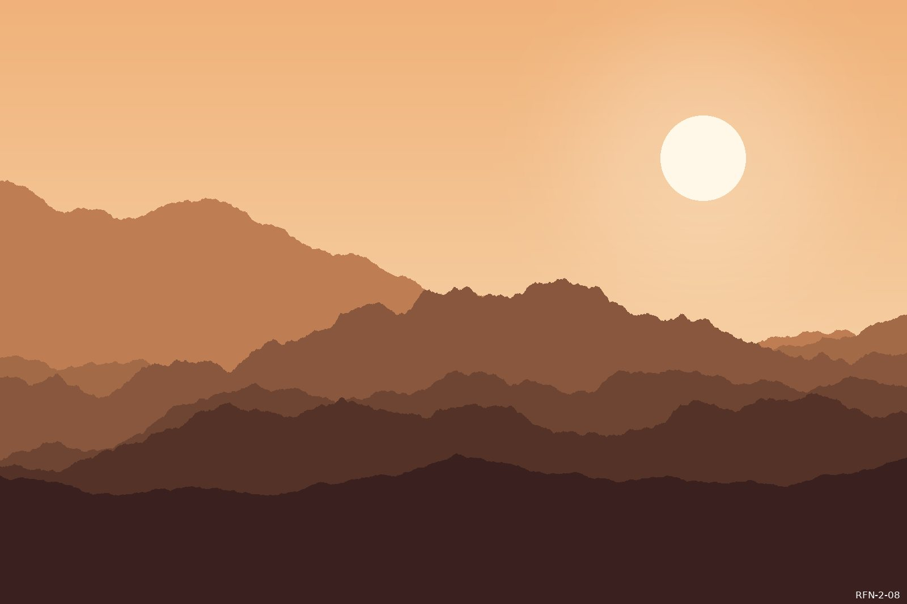

Scouting the mesa country
I carry one body and two lenses on longer walks. A wide lens for the foreground and a short telephoto for compressing the ridgelines into flat bands of tone.

The road over the pass closes with the first heavy snow, usually in late October. We made it across two days before the gate went down.
The river changes course every spring. Gravel bars that were islands last year are now part of the bank, and the channels braid differently every visit.

We left the trailhead before five, headlamps on, and reached the saddle just as the sky started to change colour. The wind dropped for about ten minutes and that was the window.
Back at camp the light went blue and then grey, and the only thing left to do was cook, check the cards and plan the next morning's route.